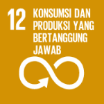

Wakil Ketua Badan Kerja Sama Antar-Parlemen (BKSAP) DPR RI Achmad Hafisz Tohir SDGs Desa merupakan upaya terpadu wujudkan desa tanpa kemiskinan dan kelaparan, desa ekonomi tumbuh merata, peduli kesehatan, peduli lingkungan, peduli Pendidikan, ramah perempuan, berjejaring, serta desa tanggap budaya untuk percepatan pencapaian tujuan pembangunan berkelanjutan.“SDGs (Sustainable Development Goals/Tujuan Pembangunan Berkelanjutan) Desa merupakan role pembangunan berkelanjutan yang masuk dalam program prioritas penggunaan Dana Desa Tahun 2021,” kata Hafisz Thohir di Kantor Bupati Karawang, Rabu (5/5/2021).Hafisz memandang, Karawang perlu mendapatkan penanganan dan perhatian guna meningkatkan kesejahteraan masyarakat desa sekaligus meningkatkan kualitas hidup manusia, menanggulangi kemiskinan melalui pemenuhan kebutuhan dasar, pembangunan sarpras di desa, pengembangan potensi sektor ekonomi lokal, serta pemanfaatan sumber daya alam dan lingkungan."Karawang ini memiliki ciri khas yang dapat kami (BKSAP) bawa untuk dikerjasamakan di kancah internasional. Dari segi sarana prasarana Karawang sudah sangat memadai, Karawang sendiri merupakan kota lumbung padi, pariwisata yang memiliki nilai sejarah tinggi serta memiliki Pendidikan yang berkualitas internasional,” terangnya.Sebelumnya, Bupati Karawang Cellica Nurrachadiana menjelaskan, Kabupaten Karawang berpotensi sebagai lumbung pangan nasional dan penopang industrialisasi di Indonesia melalui 7 Kawasan Industri dengan 1800 pabrik di wilayah baratnya. Namun demikian pajak di sektor industri ini belum signifikan menambah pendapatan asli daerah karena masih dominan mengalir ke Pusat. "Untuk itu saya berharap BKSAP DPR RI bisa menjembatani sinergi dan kolaborasi khususnya di bidang investasi, kerja sama sister city, kerja sama pendidikan untuk semakin meningkatkan Indeks Pembangunan Manusia di Kabupaten Karawang melalui ‘Karawang Cerdas’, revitalisasi lumbung pangan, dan optimalisasi potensi pariwisata antara lain Candi Jiwa di Batujaya, monumen dan tempat bersejarah di Rengasdengklok, serta terumbu karang di Pakis Jaya," jelasnya.Turut Hadir pada Sosialisasi Diplomasi Parlemen di Karawang, Ketua BKSAP Fadli Zon, Wakil Ketua BKSAP Mardani Ali Sera dan Putu Supadma Rudana serta Anggota BKSAP lainnya, diantaranya Puteri Anetta Komarudin, Fadhullah, Ratih Megasari Singkarru, Didi Irawadi Syamsudin, Asman Abnur, dan Ema Umiyyatul Chusnah. (rnm/es)
Wakil Ketua Badan Kerja Sama Antar-Parlemen (BKSAP) DPR RI Achmad Hafisz Tohir SDGs Desa merupakan upaya terpadu wujudkan desa tanpa kemiskinan dan kelaparan, desa ekonomi tumbuh merata, peduli kesehatan, peduli lingkungan, peduli Pendidikan, ramah perempuan, berjejaring, serta desa tanggap budaya untuk percepatan pencapaian tujuan pembangunan berkelanjutan.“SDGs (Sustainable Development Goals/Tujuan Pembangunan Berkelanjutan) Desa merupakan role pembangunan berkelanjutan yang masuk dalam program prioritas penggunaan Dana Desa Tahun 2021,” kata Hafisz Thohir di Kantor Bupati Karawang, Rabu (5/5/2021).Hafisz memandang, Karawang perlu mendapatkan penanganan dan perhatian guna meningkatkan kesejahteraan masyarakat desa sekaligus meningkatkan kualitas hidup manusia, menanggulangi kemiskinan melalui pemenuhan kebutuhan dasar, pembangunan sarpras di desa, pengembangan potensi sektor ekonomi lokal, serta pemanfaatan sumber daya alam dan lingkungan."Karawang ini memiliki ciri khas yang dapat kami (BKSAP) bawa untuk dikerjasamakan di kancah internasional. Dari segi sarana prasarana Karawang sudah sangat memadai, Karawang sendiri merupakan kota lumbung padi, pariwisata yang memiliki nilai sejarah tinggi serta memiliki Pendidikan yang berkualitas internasional,” terangnya.Sebelumnya, Bupati Karawang Cellica Nurrachadiana menjelaskan, Kabupaten Karawang berpotensi sebagai lumbung pangan nasional dan penopang industrialisasi di Indonesia melalui 7 Kawasan Industri dengan 1800 pabrik di wilayah baratnya. Namun demikian pajak di sektor industri ini belum signifikan menambah pendapatan asli daerah karena masih dominan mengalir ke Pusat. "Untuk itu saya berharap BKSAP DPR RI bisa menjembatani sinergi dan kolaborasi khususnya di bidang investasi, kerja sama sister city, kerja sama pendidikan untuk semakin meningkatkan Indeks Pembangunan Manusia di Kabupaten Karawang melalui ‘Karawang Cerdas’, revitalisasi lumbung pangan, dan optimalisasi potensi pariwisata antara lain Candi Jiwa di Batujaya, monumen dan tempat bersejarah di Rengasdengklok, serta terumbu karang di Pakis Jaya," jelasnya.Turut Hadir pada Sosialisasi Diplomasi Parlemen di Karawang, Ketua BKSAP Fadli Zon, Wakil Ketua BKSAP Mardani Ali Sera dan Putu Supadma Rudana serta Anggota BKSAP lainnya, diantaranya Puteri Anetta Komarudin, Fadhullah, Ratih Megasari Singkarru, Didi Irawadi Syamsudin, Asman Abnur, dan Ema Umiyyatul Chusnah. (rnm/es)



Wakil Ketua Badan Kerja Sama Antar-Parlemen (BKSAP) DPR RI Achmad Hafisz Tohir SDGs Desa merupakan upaya terpadu wujudkan desa tanpa kemiskinan dan kelaparan, desa ekonomi tumbuh merata, peduli kesehatan, peduli lingkungan, peduli Pendidikan, ramah perempuan, berjejaring, serta desa tanggap budaya untuk percepatan pencapaian tujuan pembangunan berkelanjutan.“SDGs (Sustainable Development Goals/Tujuan Pembangunan Berkelanjutan) Desa merupakan role pembangunan berkelanjutan yang masuk dalam program prioritas penggunaan Dana Desa Tahun 2021,” kata Hafisz Thohir di Kantor Bupati Karawang, Rabu (5/5/2021).Hafisz memandang, Karawang perlu mendapatkan penanganan dan perhatian guna meningkatkan kesejahteraan masyarakat desa sekaligus meningkatkan kualitas hidup manusia, menanggulangi kemiskinan melalui pemenuhan kebutuhan dasar, pembangunan sarpras di desa, pengembangan potensi sektor ekonomi lokal, serta pemanfaatan sumber daya alam dan lingkungan."Karawang ini memiliki ciri khas yang dapat kami (BKSAP) bawa untuk dikerjasamakan di kancah internasional. Dari segi sarana prasarana Karawang sudah sangat memadai, Karawang sendiri merupakan kota lumbung padi, pariwisata yang memiliki nilai sejarah tinggi serta memiliki Pendidikan yang berkualitas internasional,” terangnya.Sebelumnya, Bupati Karawang Cellica Nurrachadiana menjelaskan, Kabupaten Karawang berpotensi sebagai lumbung pangan nasional dan penopang industrialisasi di Indonesia melalui 7 Kawasan Industri dengan 1800 pabrik di wilayah baratnya. Namun demikian pajak di sektor industri ini belum signifikan menambah pendapatan asli daerah karena masih dominan mengalir ke Pusat. "Untuk itu saya berharap BKSAP DPR RI bisa menjembatani sinergi dan kolaborasi khususnya di bidang investasi, kerja sama sister city, kerja sama pendidikan untuk semakin meningkatkan Indeks Pembangunan Manusia di Kabupaten Karawang melalui ‘Karawang Cerdas’, revitalisasi lumbung pangan, dan optimalisasi potensi pariwisata antara lain Candi Jiwa di Batujaya, monumen dan tempat bersejarah di Rengasdengklok, serta terumbu karang di Pakis Jaya," jelasnya.Turut Hadir pada Sosialisasi Diplomasi Parlemen di Karawang, Ketua BKSAP Fadli Zon, Wakil Ketua BKSAP Mardani Ali Sera dan Putu Supadma Rudana serta Anggota BKSAP lainnya, diantaranya Puteri Anetta Komarudin, Fadhullah, Ratih Megasari Singkarru, Didi Irawadi Syamsudin, Asman Abnur, dan Ema Umiyyatul Chusnah. (rnm/es)


Dashboard Monitoring SDGs
DEWAN PERWAKILAN RAKYAT
Dashboard Monitoring SDGs dikembangkan dalam rangka untuk mengevaluasi perkembangan dan pencapaian Agenda Tujuan Pembangunan Berkelanjutan di tingkat Daerah Pemilihan (dapil), sehingga dapat digunakan sebagai input kebijakan melalui evidence-based policy tingkat parlemen dalam mengawasi Pemerintah Indonesia dalam Pembangunan Berkelanjutan di Indonesia
LIHAT DASHBOARD
DEWAN PERWAKILAN RAKYAT
REPUBLIK INDONESIA
Jl. Jenderal Gatot Subroto - Senayan - Jakarta 10270